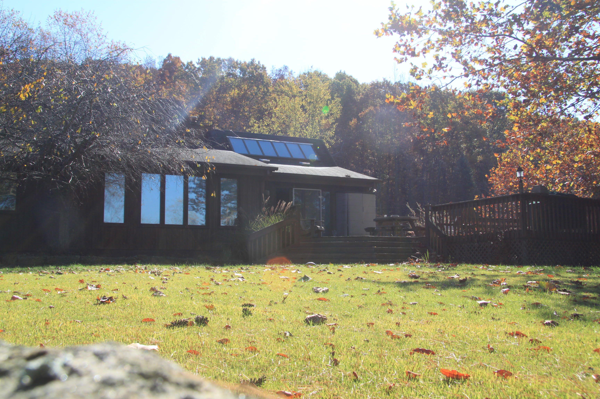

There are a tons of fun things to do in the hills of West Virginia — some of which are even legal! While you’re in town you can go hiking, ride 4-wheelers, drink smoothies on Hall Hill, and more. Choose your own adventure!
Here is a list of some fun things to do while you’re in town:
- Have a smoothie on Hall Hill: This is where Ian’s Mom lives. Stop by the Hall house and Lee might make you a smoothie if you ask nicely. It will likely include chia seeds, spinach, a frozen banana, and a bunch of other healthy ingredients. You can walk around the circle (which goes around the perimeter of the farm) and go for a quick hike in the woods. Fun times!
- Check out the Hall Family Farm: The Hall Farm has been in the Hall family for generations and generations. It’s about a 15 minute drive from the Stonewall Resort. You can check out the barn, splash around in the creek, or drive up on the hill and try to find the 3 moo cows that live on the farm.
- Get all outdoorsy at Stonewall Jackson Lake: The lake has tons of fun things to do. You can go fishin’, rent a boat, feed cat food to the carp, go for a bike ride, swim in the pool, get a back massage, and more!
- Get spooked out by the State Hospital: In the center of town there is a super creepy mental institution from the 1800s. It’s the largest hand-cut stone building in the United States… I think? Either way, you can take a haunted tour of the place and have chills sent up and down your spine.
- Go for a walk at Jackson’s Mill: Jackson’s Mill is the childhood home of General Stonewall Jackson (you know, from the Civil War). It’s a pretty place and it’s right down the road.
- Get a hot dog at T&L: T&L stands for “Ted and Linda”, which isn’t really important for you to know. Stop by for a delicious hot dog (or three). The fries are good too!
- Sip some strawberry wine at Lambert’s Winery: Lambert’s is a nice winery in Weston. Swing by for a swig, and for some good conversation. They have lots of good berry wines, and some food too (I think).
- Get some ice cream at Coke & Float: Coke & Float is a great ice cream joint in town. Get the turtle sundae or a chocolate dipped twist!
- Eat a pepperoni roll! Pepperoni rolls are a WV signature food. You can get them at almost any gas station. If you’re smart you’ll go to Sheetz to grab a ’roni roll and a donut. Sheetz is the best gas station in the world!
- Go antiquing in Buckhannon: There are some good antique shops in Weston, but if you go one town over to Buckhannon you’ll find even more cool antique stores. Plus the Goodwill there is out of this world.
- Splash around at Audra: Audra State Park is a wonderful place to take a dip with the locals. You can also walk up and down the river by following a very scenic path off to the side. It’s a great way to get out in nature, and is located about 30 minutes from Weston.
- Explore Helvetia, WV: Have you ever wondered what it would be like if a group of Swiss and German settlers arrived in West Virginia in 1869 and started their own Swiss village? Well, that happened, and their descendants still live there today carrying on the traditions of dance, music, food, and more. It’s a 65 minute drive from Weston, but is well worth the (windy) trip. Once you arrive, have lunch at the Hutte and order the pfeffernusse!
- Go to Gabes already! Gabriel Brothers (also known as Gabes) is the best discount clothing store ever. Sometimes it can be hit or miss, but when it’s good, it’s great!
If you feel like driving 45 minutes or so, you can also hit up Morgantown, WV which is tons of fun. Check out the list of road trip pit stops to learn more!